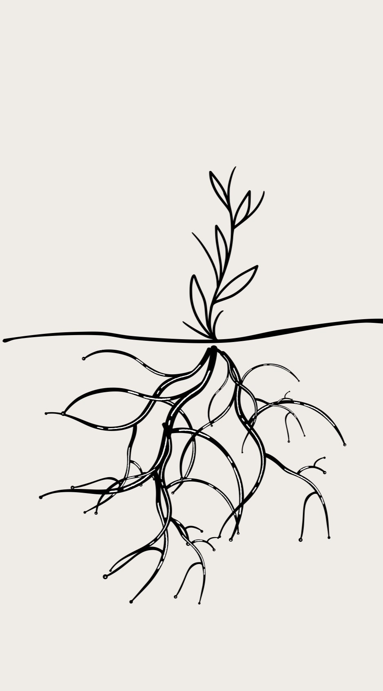

The platform economy is part of digitization and technology development, where almost the most value has been created in the past decades. I believe we are still only at the beginning of its development, when platform economy companies start to combine AI and IoT with their products and as part of their operations. It will continue to transform our societies and lives even more. The technology sector has generated over 400% additional value over the past decade, while all other sectors combined have contributed only about one-tenth of that, around 40%. This valuation of technological davelopment reflects the value it provides not only to other sectors but also to consumers' lives. That's something to think about and fascinates me, and I hope to be part of that change — as an entrepreneur.
At the moment I'm building a native mobile application. It will be a consumer brand and an app that people would use in their everyday life. I want it to look great for the users and to be a service that really uses the possibilities of current technology even at lower levels. Right now I'm gathering up a team with my co-founder, feel free to ask more and contact us!
A way of thinking
I believe in path dependence. Everything you do, successes and failures can be a lesson and preparation for the future. The more you do things and fail, the luckier you get and your knowledge base, from which to push forward, grows (like roots)! Afterwards everything seems obvious or logical, but you don't know what's to come. So grow your experience base, do as many things as possible, and the further you will go on your path!
Startups
Entrepreneurship is a way to change things in society. It is also a way to fulfill myself. I'm dreaming of a good team to start a company with. Today, my role models are many Finnish game industry entrepreneurs, and of course also the Wolt team.